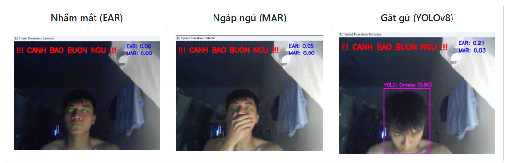

Hệ thống phát hiện sự mệt mỏi của tài xế

Mô tả dự án
Đây là hệ thống AI thời gian thực giúp phát hiện sự mệt mỏi của tài xế bằng cách kết hợp phân tích điểm mốc trên khuôn mặt và nhận dạng tư thế.
Các tính năng chính
- Sử dụng MediaPipe để tính toán các chỉ số EAR (độ nhắm của mắt) và MAR (độ mở của miệng khi ngáp).
- Áp dụng mô hình YOLO để phát hiện các tư thế đầu cho thấy sự mệt mỏi.
- Phát triển cơ chế cảnh báo, kích hoạt khi các chỉ số mệt mỏi kéo dài trong nhiều khung hình liên tiếp.
Công nghệ sử dụng
- Python
- OpenCV
- MediaPipe
- YOLO
- PyTorch